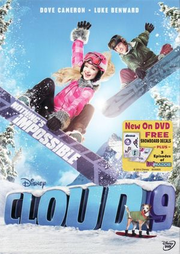
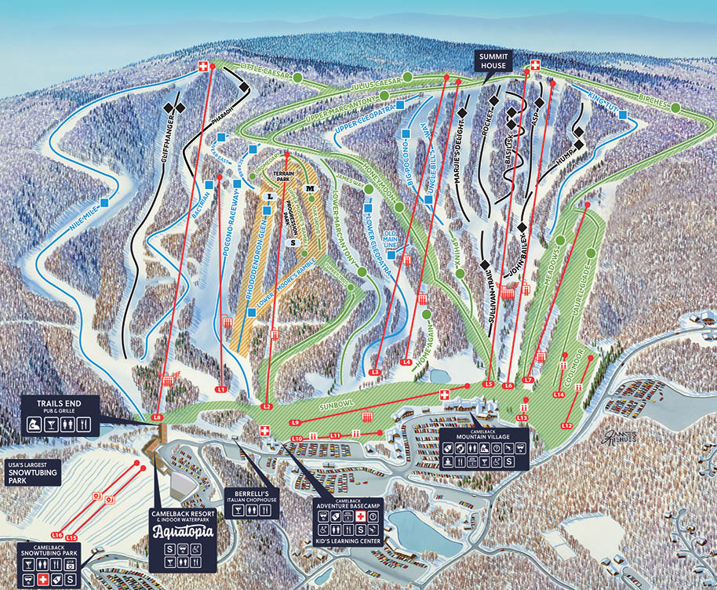

Learning to Snowboard: A Personal Journey
I was ten years old, sitting cross-legged on the carpet in front of the TV when a Disney Channel movie came on that would domino it's way into changing my life, Cloud 9.

Image credit: Disney
It followed a girl who couldn’t snowboard, yet threw herself into it anyway. She fell. She struggled. And then, eventually, she flew.
I didn’t know it then, but just those few hours watching someone try their best at something they love. Failing over and over until they persevere. That was the butterfly that changed it all.
Within days I was begging my parents for a snowboard, not because I thought I’d be great, but because I wanted to no, needed to, try. I just had to see if I could do it, and I needed to feel that for myself.
See, this page is different from the rest of this site. It’s not about travel destinations or gear guides. It’s about process.
It’s a story about failing. About falling. About trying again. And most importantly, about finding out what happens if you don’t quit when something feels too hard.
Here you’ll follow how I taught myself to snowboard before ever seeing a ski lift. You’ll see how I turned a a piece of plastic and my front lawn into my own personal trail.
And maybe, if you’ve been holding off on trying something new, waiting for the “right” conditions, this might just be that push you need to just let go of the idea of waiting and just start trying.
Subsequence One: The Front Lawn
I got my first snowboard from our local Walmart. At the time, it felt like holding treasure: sleek, new, and full of possibility. But looking back now, it was a cheap piece of plastic that barely worked. It had no real binding system just the rigid, gray, non-adjustable strap across the middle, the kind that made you wonder if it was designed by someone who had never actually been on the snow.

My winter boots didn’t really fit, but I was determined to make them. I just jamming them in, almost like I was kicking the board, trying to force a match between foot and board. That board wasn’t going to help me ride, but it was going to teach me how much effort I was willing to give.
Unfortunately, the season’s snow had already melted by the time I finally convinced my parents to get it. So I waited. And waited. I watched the skies every day for months, hoping they'd give me the winter I needed to try. By the time I turned eleven, snow had finally returned but my chores. I wasn’t allowed to play until I finished shoveling the driveway.
So I shoveled with purpose. But instead of piling the snow to the side, I heaved every scoop onto our sloped front lawn. I figured if I could build my own hill, I could start riding faster. After a couple hours and three trips around the driveway, I had transformed that modest patch of grass into something that looked, at least in my eyes, like a slope worth riding.
It was barely fifteen feet long. The boots still didn’t fit. But that afternoon, none of that mattered. I had built my first mountain, and I was going to ride it.
Subsequence Two: The Goal
I started around noon, eager to ride, even if all I had was a fifteen foot lawn covered in driveway snow. My boots were still fighting the board, and I had no real sense of balance. I had never stepped on a skateboard, surfboard, ripstick, nothing board related. My feet didn’t understand the motion. My body didn’t trust the slant. Every ride felt like a guessing game between falling forward and falling backward.
But I gave myself a goal. I wouldn’t quit until I could land five full runs, start to finish, without falling. That was it. Nothing too crazy like a flip or a jump, just five clean runs. At first, even one clean run seemed like a stretch.
I slipped off the board before I moved an inch. I overbalanced. I fell sideways. But I kept trying. One run turned into two, but not in a row. Reset. Try again. One or two again. Then fall. Over and over.
As the sun started dipping lower, everything around me took on that blueish winter tone. The snow, now packed and icy, made each fall hurt a little more. My feet ached from the tight boots and cold. My toes almost frozen solid. My legs burned from resetting the board over and over. But I didn’t stop. I couldn’t. I took a breath of the cold air, took my stance, and rode again. Finally, after nearly eight hours on that little lawn,I hit five in a row. Clean. Balanced. Not perfect, but real. I don’t think I’ve ever been so exhausted and so proud at the same time.
When I told my parents, something shifted. They saw it. The effort, the excitement, it all just clicked. A couple weekends later, they decided to take me snowboarding for real. We packed up and spent the day at Camelback Mountain, just a few hour drive from home. I still remember the feeling when I looked out at the slope. It was massive. This wasn’t our lawn. This was the real thing.

Map credit: Camelback Mountain Resort
We signed up for a beginner snowboarding class. It took place on the far bottom right of the map. As the instructor watched me ride, he asked if I had ever skateboarded before. I hadn’t. But apparently the way I wasn't scared of learning forward, how I handled the turns, it looked like someone who had. Everything I’d taught myself on that tiny hill had transferred. The hours of falling and retrying had turned into real skill. After the lesson ended, I didn’t want to stop. I spent the rest of the day riding, exploring every inch of the beginner runs with this massive grin I couldn’t wipe off.
That day marked the true beginning, not just of snowboarding, but of learning what persistence could turn into. That feeling of getting it right, after failing so many times, stayed with me. It still does.
Conclusion
This might not be the most glamorous story, but it’s one of the most defining moments of my life.
No cameras, no cheering crowd, just a kid with a plastic-strapped snowboard, a patchy hill, and a goal he refused to give up on.
What started as a childhood obsession sparked by a movie became a lesson that shaped how I approach nearly everything.
I learned that persistence isn’t loud: it’s quiet, repetitive, and exhausting. But it builds you up run by run, fall by fall. It’s okay to look silly. It’s okay to fail. What matters is showing up again and again, even when your feet hurt and your slope is just your front lawn.
That lesson carried me down my first real mountain and every one since. And it reminds me every time I face something new: just keep trying.
Because if you push through enough falls, you’ll eventually find your balance and it's not just about the ride. As corny as it is, the journey is what it's all about.